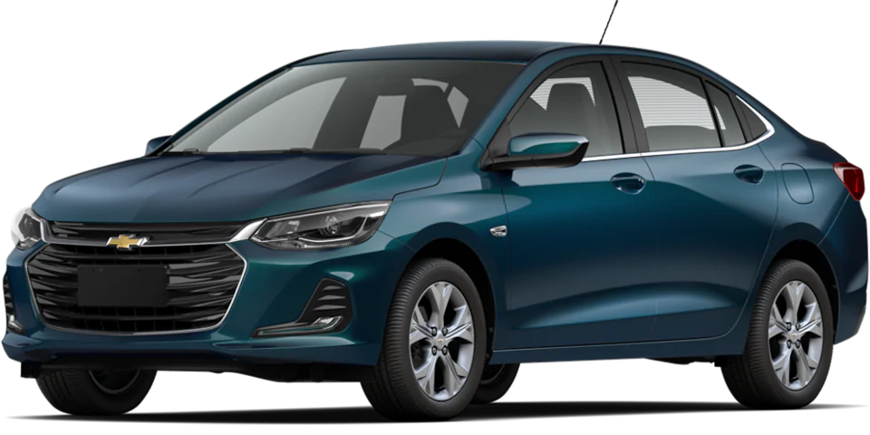

| CARRO | |
| ANTES | DESPUÉS |
Se utilizaba en mayor medida, pues era algo común y que para la gente era necesario incluso en casos en los que no.  |
Hoy en día, debido al confinamiento y a los medios de convivencia digitales, el uso de este se ha hecho menos necesario, ya que nos vemos "atrapados" en la obligación de hacer las cosas que se hacían cotidianamente, ej. ir al trabajo, ir al super, etc. a ya no realizarlas debido a las nuevas tecnologías |